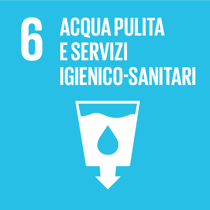
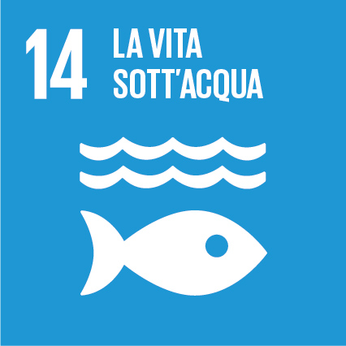

Target: 2027
Status 2025: In corso
SDGs:




Target: 2027
Status 2025: In corso


Nel 2025 BF ha coinvolto i fornitori rilevanti anche sul tema della biodiversità attraverso uno specifico questionario di sostenibilità.
Ai fornitori è stato chiesto di indicare l’eventuale presenza di siti situati all’interno o in prossimità di aree protette, lo svolgimento di attività potenzialmente rischiose per la biodiversità e il possesso di certificazioni collegate a questo ambito. Il questionario è stato inviato al 100% dei fornitori rilevanti e ha registrato un tasso di risposta del 9%.
L’iniziativa permette al Gruppo di estendere il monitoraggio della biodiversità oltre le proprie attività dirette, includendo progressivamente anche la catena di fornitura.